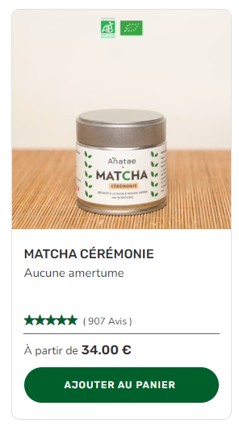
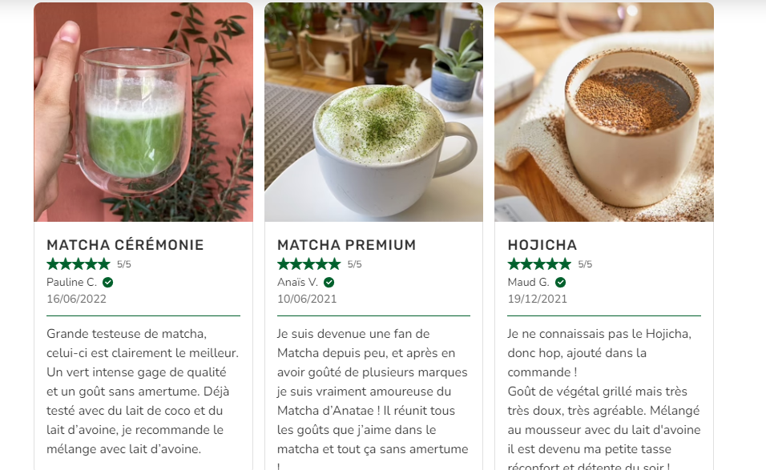
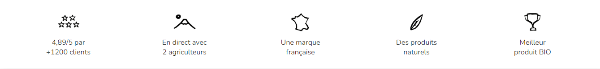
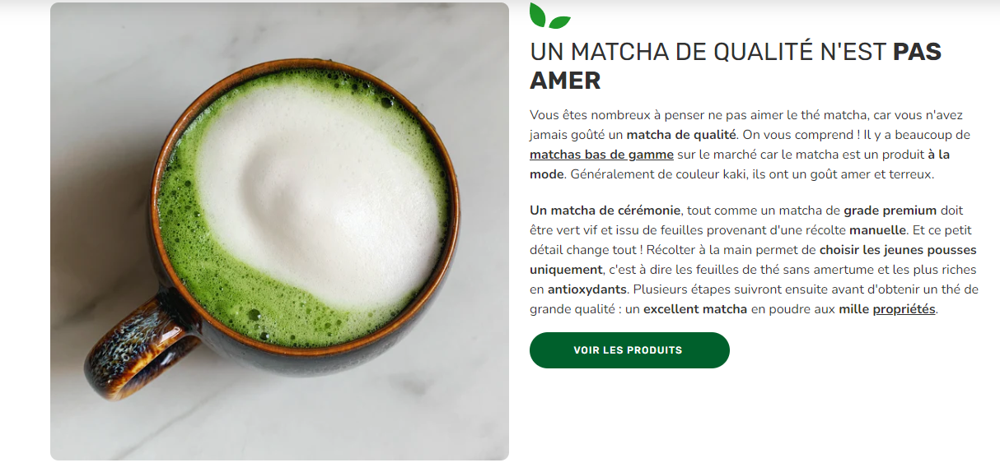
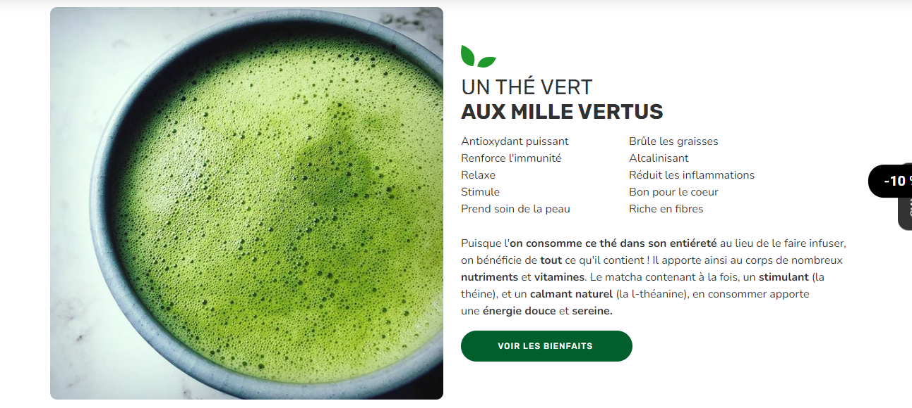

Anatae.fr
Tienda naturista francesa sobre Shopify. Trabajé dando estilos al Design System (botones, márgenes, espacios, sombras, colores, fuentes), Product Card, Review Card, elementos de contenido, títulos, Row Icons y la Announcement's Top Bar (componente donde se trabajó con JavaScript para implementar Swiper Slider). Todo con Responsive Design y basado en diseño en Figma.
Algunas capturas de pantalla de la tienda




